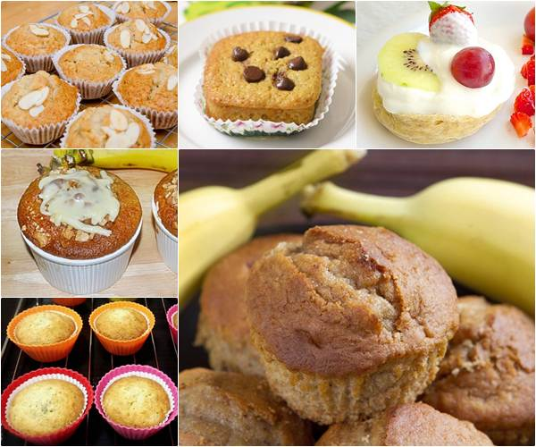
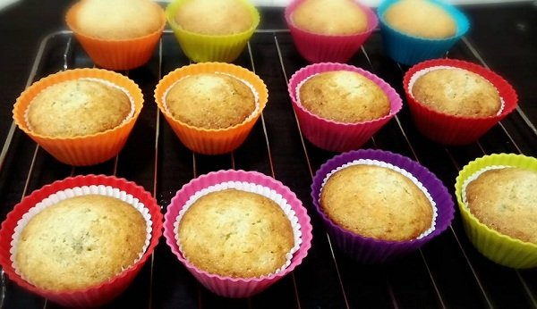
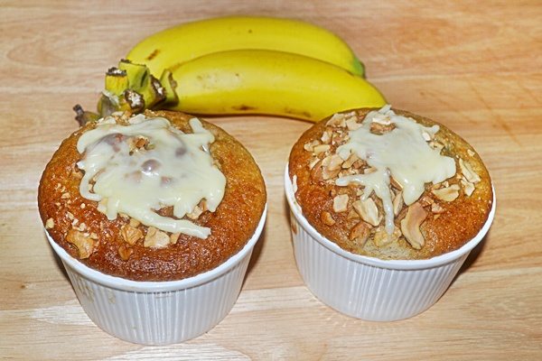
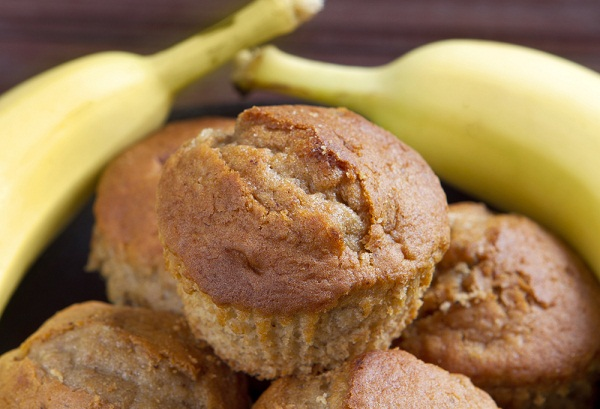
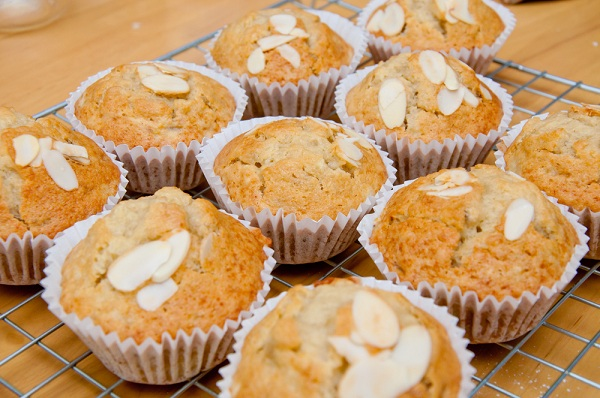
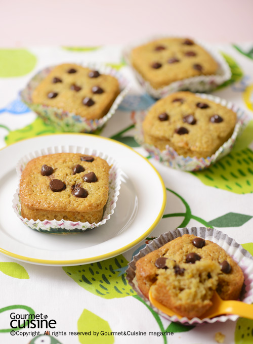
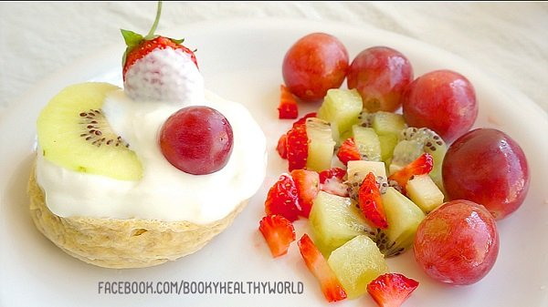

7 สูตรเค้กกล้วยหอม เนื้อนุ่มหวานหอม ทำง่ายทันใจหลากสไตล์

วิธีทำเค้กกล้วยหอม 7 สไตล์สูตรขนมทำง่าย เหมาะสำหรับกินรองท้องเป็นของว่างคู่กับเครื่องดื่มก็อร่อยเว่อร์วัง มาพร้อมวิธีทำหลายแบบเลือกได้ตามความสะดวก แม้ขนมเค้กกล้วยหอมจะหาซื้อง่าย ๆ และราคาไม่แพงเลย แต่เชื่อเลยว่า บางครั้งก็ต้องเจอเค้กกล้วยหอมที่แป้งเยอะและไม่มีกลิ่นหอมของกล้วยหอมเลย หรือไม่ก็ทำรสหวานจัดเกินไปจนน้ำตาลเรียกพี่ วันนี้กระปุกดอทคอมก็เลยขอนำเสนอ 7 สูตรเค้กกล้วยหอม มาพร้อมกัน 7 สไตล์เนื้อกล้วยหอมตูม ๆ รสสัมผัสนุ่มละมุน หวานกลิ่นกล้วย ชอบแบบไหนเลือกได้ตามใจ หน้าตาดี ๆ แบบนี้ทำง่ายกว่าที่คิดเยอะเลยค่ะ

1. เค้กกล้วยหอม (สูตรฉ่ำเนย) เค้กกล้วยหอมแบบฉ่ำเนยถ้วยนี้เป็นสูตรจากคุณ MaShi BBJ สมาชิกเว็บไซต์พันทิปดอทคอม กลิ่นเนยหอมกรุ่น เนื้อนุ่มเนียน ถ้าหากอยากสัมผัสเนื้อกล้วยหอมก็บดไม่ต้องละเอียดมาก หรือเอาไปแช่เย็นเนื้อก็จะไม่แข็งมากและก็ยังได้กลิ่นหอมของเนยอยู่ ทำใส่ในพิมพ์มัฟฟินกินง่ายชิ้นพอดีคำ ถ้าหากอยากกินแบบชิ้นหนาก็จับใส่พิมพ์ขนมปังได้เลยค่ะ แล้วเวลาหม่ำค่อยหั่นสไลซ์เอา
ส่วนผสม เค้กกล้วยหอม
• กล้วยหอมสุกบด 1+1/2 ถ้วย
• นมสด 4 ช้อนโต๊ะ
• กลิ่นวานิลลา 1 ช้อนชา
• แป้งสาลีอเนกประสงค์ 2 ถ้วย
• ผงฟู 1 ช้อนชา
• เบกกิ้งโซดา 1 ช้อนชา
• เนยเค็ม 250 กรัม (หั่นเป็นชิ้นเล็ก ๆ จะได้นิ่มเร็ว ๆ)
• น้ำตาลทรายละเอียด 1+1/2 ถ้วย (ถ้ากล้วยงอมมากลดเหลือแค่ 1 ถ้วย)
• ไข่ไก่ 4 ฟอง
• พิมพ์มัฟฟิน
วิธีทำเค้กกล้วยหอม
1. เปิดเตาอบที่อุณหภูมิ 175 องศาเซลเซียส เตรียมไว้
2. ผสมกล้วยหอมบดนมสด และกลิ่นวานิลลาให้เข้ากัน
3. ผสมแป้งสาลีอเนกประสงค์กับผงฟูและเบกกิ้งโซดาเข้าด้วยกัน เตรียมไว้
4. ตีเนยเค็มด้วยตะกร้อมือให้ขึ้นฟูจนเป็นสีขาวนวล ทยอยใส่น้ำตาลทรายลงไปแล้วตีผสมให้เข้ากัน แบ่งใส่สัก 2-3 ครั้ง
5. ใส่ไข่ไก่ลงไปตีทีละฟอง พอหมดลิ่มไข่ก็ใส่ใบต่อไปได้เลยจนครบ
6. ใส่ส่วนผสมกล้วยบดลงไปตีผสมให้เข้ากัน
7. ใส่ส่วนผสมแป้งลงไป ค่อย ๆ ตะล่อมเบาจนเป็นเนื้อเดียวกัน ตักใส่พิมพ์มัฟฟิน
8. นำเข้าเตาอบที่อุณหภูมิ 15-20 นาที นำออกจากเตา วางพักทิ้งไว้ให้เย็นลง แกะออกจากพิมพ์ พร้อมเสิร์ฟ
เค้กกล้วยหอมฉ่ำเนย กล้วยเน้น ๆ ทำง่าย ๆ ด้วยอุปกรณ์บ้าน ๆ

2. เค้กกล้วยหอม สูตรโรยชีสเค้กกล้วยหอมธรรมดา ๆ กินจนเบื่อแล้วลองมาหม่ำเค้กกล้วยหอมโรยชีส สูตรจากคุณ phanet สมาชิกเว็บไซต์พันทิปดอทคอม กันบ้างดีกว่า วิธีทำง่ายมาก ทุกขั้นตอนเหมือนการทำเค้กกล้วยหอมทั่ว ๆ ไป เพียงแต่ว่าพออบเสร็จแล้วเอาออกมาโรยชีส และเอาเข้าไปอบพอให้ชีสละลาย สุดท้ายโรยเม็ดมะม่วงหิมพานต์บดลงไปเคี้ยวเพลิน ๆ อีกหน่อย แค่นี้ก็ฟินแล้ว
ส่วนผสม เค้กกล้วยหอม
• แป้งเค้ก 100 กรัม
• ผงฟู 1 ช้อนชา
• เบกกิ้งโซดา 1/2 ช้อนชา
• กล้วยหอม 100 กรัม
• น้ำมะนาว 1/2 ช้อนชา
• ไข่ไก่ 2 ฟอง
• น้ำตาลทราย 90 กรัม
• เกลือป่น 1/2 ช้อนชา
• น้ำมันพืช 1/2 ถ้วย
• ชีสแผ่นหั่นเส้น
• เม็ดมะม่วงหิมพานต์บด
วิธีทำเค้กกล้วยหอม
1. ร่อนแป้งเค้ก ผงฟู และเบกกิ้งโซดาเข้าด้วยกัน เตรียมไว้
2. บดกล้วยหอมผสมน้ำมะนาวให้เข้ากันเป็นเนื้อเดียวเตรียมไว้
3. ตีไข่ไก่ น้ำตาลทราย และเกลือให้ขึ้นเป็นครีมขาวเตรียมไว้
4. ใส่ส่วนผสมแป้งที่ร่อนแล้วลงไปในส่วนผสมไข่แล้วตีให้เข้ากัน จากนั้นใส่ส่วนผสมกล้วยบดลงไปตีให้เข้ากันอีกครั้ง เทส่วนผสมลงถ้วย นำไปเข้าเตาอบ
5. นำออกจากเตา โรยหน้าเค้กกล้วยหอมด้วยชีสแล้วเข้าอบต่ออีกนิดพอให้ชีสละลาย นำออกมาโรยเม็ดมะม่วงหิมพานต์บด พร้อมเสิร์ฟ

3. เค้กกล้วยหอมช็อกโกแลต
เอาใจคนกำลังลดน้ำหนักแต่อยากของหวานมาก ๆ ขอแนะนำเค้กกล้วยหอมช็อกโกแลตสูตรไร้แป้ง ไม่ต้องใช้เตาอบ ทำง่ายด้วยไมโครเวฟ 60 วินาทีเท่านั้น แล้วเพื่อน ๆ จะได้สัมผัสทั้งเนื้อช็อกโกแลตและซอสช็อกโกแลตสุดฉ่ำที่ราดบนเนื้อเค้กกล้วยหอมผสมผสานกล้วยหอมหั่นแว่นด้านบนอีกด้วย แหม… กินถ้วยเดียวคงไม่พอแล้วงานนี้
ส่วนผสม เค้กกล้วยหอมช็อกโกแลต
► กล้วยหอม 1 ลูก
► ผงโกโก้ 2 ช้อนโต๊ะ
► เนยถั่ว 1/4 ถ้วย
► น้ำตาลทราย 2 ช้อนโต๊ะ
► ไข่ไก่ 1 ฟอง
วิธีทำเค้กกล้วยหอมช็อกโกแลต
1. ใช้ส้อมบดกล้วยหอมให้ละเอียด
2. ใส่ผงโกโก้ เนยถั่ว น้ำตาลทราย และไข่ไก่ลงไปผสมให้เข้ากันเป็นเนื้อเดียว
3. ตักส่วนผสมใส่ถ้วยทนความร้อน (ที่สามารถนำเข้าไมโครเวฟได้) นำเข้าไมโครเวฟใช้ไฟแรงประมาณ 60 วินาที นำออกจากไมโครเวฟ แต่งหน้าด้วยกล้วยหอมหั่นแว่น ราดช็อกโกแลตให้สวยงาม พร้อมเสิร์ฟ
เค้กกล้วยหอมช็อกโกแลต ไร้แป้ง ทำง่ายด้วยไมโครเวฟ

เอาใจเด็กหอ หรือมนุษย์คอนโดด้วยเค้กกล้วยหอมสูตรไมโครเวฟ เอาไว้ทำกินยามเช้า หรือยามว่าง แค่เตรียมส่วนผสมให้ครบและทำตามขั้นตอนเท่านั้นก็จะได้หม่ำแล้ว เนื้อนุ่มหอมฉุยไม่แพ้ทำจากเตาอบเลย สามารถราดแยมสตรอว์เบอร์รี หรือซอสช็อกโกแลตเพิ่มความฟินได้นะคะ
ส่วนผสม เค้กกล้วยหอม สูตรไมโครเวฟ
• แป้งเค้ก 200 กรัม
• ผงฟู 1/2 ช้อนชา
• เบกกิ้งโซดา 1/2 ช้อนชา
• เกลือป่น 1/2 ช้อนชา
• ไข่ไก่ 1 ฟอง
• กลิ่นวานิลลา 1/2 ช้อนชา
• กล้วยหอมบดละเอียด 1 ลูก
• นมสดรสจืด 1/2 ถ้วย
• เนยสดชนิดจืดละลาย 80 กรัม
วิธีทำเค้กกล้วยหอม สูตรไมโครเวฟ
1. ร่อนแป้งเค้ก ผงฟู เบกกิ้งโซดา และเกลือป่นเข้าด้วยกัน เตรียมไว้
2. ตีผสมไข่ไก่กับน้ำตาลไอซิ่งจนขึ้นฟู หรือมีสีอ่อนลง เติมกลิ่นวานิลลาและกล้วยหอมบดละเอียดลงไปตีผสมให้เข้ากัน
3. ใส่ส่วนผสมแป้ง นมสด และเนยสดละลาย คนให้ส่วนผสมเข้ากันดีเป็นเนื้อเนียน
4. ใช้พายยางตักส่วนผสมเค้กใส่พิมพ์ประมาณ 3/4 ของพิมพ์ นำเข้าเตาไมโครเวฟใช้ไฟปานกลางประมาณ 1 นาที (แล้วแต่กำลังไฟของแต่ละเครื่อง) อบจนสุก นำออกจากเตา ทิ้งไว้สักครู่ นำออกจากพิมพ์ พร้อมเสิร์ฟ

เค้กกล้วยหอมเจ เหมาะสำหรับช่วงกินเจ มากเลยค่ะ หากใครสนใจอยากทำกินเองในวันว่าง ๆ ก็ได้เหมือนกัน จุดเด่นคือ ใช้น้ำเต้าหู้แทนนมสดนั่นเอง สำหรับใครที่ไม่ชอบกลิ่นวานิลลาและกลิ่นกล้วยหอมไม่ต้องใส่ก็ได้นะคะ ส่วนรสชาติจะเป็นอย่างไรนั้นอยากรู้ต้องลองทำดูค่ะ
ส่วนผสม เค้กกล้วยหอมเจ
• แป้งเค้ก 180 กรัม
• ผงฟู 1 ช้อนชา
• เกลือป่นเล็กน้อย
• เบกกิ้งโซดา 1/2 ช้อนชา
• น้ำมันพืช 1/2 ถ้วย
• น้ำเต้าหู้รสจืด 1/2 ถ้วย
• น้ำตาลทราย 120 กรัม (เพิ่ม-ลดได้ตามชอบ)
• กล้วยหอมบดละเอียด 200 กรัม (หรือประมาณ 2 ลูก)
• น้ำมะนาวเล็กน้อย
• กลิ่นวานิลลา เล็กน้อย
• อัลมอนด์สไลซ์ (โรยหน้า)
วิธีทำเค้กกล้วยหอมเจ
1. เปิดเตาอบที่อุณหภูมิ 180 องศาเซลเซียส และวางถ้วยกระดาษลงในพิมพ์อะลูมิเนียมหรือพิมพ์มัฟฟินเตรียมไว้
2. ร่อนแป้งเค้ก ผงฟู เกลือ และเบกกิ้งโซดาเข้าด้วยกัน เตรียมไว้
3. ใส่น้ำมันพืช น้ำเต้าหู้ และน้ำตาลทรายลงในอ่างผสม ใช้ตะกร้อมือตีผสมให้เข้ากันและน้ำตาลทรายละลาย
4. ใส่กล้วยหอมบดลงไป ตามด้วยน้ำมะนาว และกลิ่นวานิลลาคนผสมให้เข้ากัน
5. ค่อย ๆ ใส่ส่วนผสมแป้งที่ร่อนแล้วลงไป คนผสมให้เข้ากันเป็นเนื้อเดียว
6. ตักส่วนผสมแป้งลงในพิมพ์ประมาณ 3/4 ของพิมพ์ โรยอัลมอนด์สไลซ์ นำไปอบที่อุณหภูมิ 180 องศาเซลเซียส ประมาณ 20 นาที นำออกจากเตา วางพักทิ้งไว้บนตะแกรง แกะออกจากพิมพ์ พร้อมเสิร์ฟ

6. เค้กกล้วยหอม สูตรผสมแครอท (สูตรแป้งน้อย)
ถ้าไม่อยากกินเค้กกล้วยหอมที่มีแป้งให้ระคายหุ่นลองมาดูไอเดียในการทำเค้กกล้วยหอมผสมแครอท สูตรจากนิตยสาร Gourmet & Cuisineที่รับรองความอร่อยแบบไม่ซ้ำเดิมแถมมีเนื้อแครอทให้กรุบกรอบเบาๆด้วย
ส่วนผสม เค้กกล้วยหอมแครอท (12-15 ชิ้น)• กล้วยหอมสุกบดละเอียด 1 1/2 ถ้วย
• แครอทขูดเป็นชิ้นเล็ก ๆ 1 ถ้วย
• นมสดรสจืด 1 ถ้วย + 1/2 ถ้วย
• ไข่ไก่ 2 ฟอง
• เนยสดเค็มละลาย 1/2 ถ้วย
• น้ำตาลทรายเม็ดละเอียด 1 ถ้วย
• เกลือป่น 1/4 ช้อนชา
• กลิ่นวานิลลา 1 ช้อนชา + 1/2 ช้อนชา
• แป้งสาลีอเนกประสงค์ 1 ถ้วย + 1/2 ถ้วย
• ข้าวโอ๊ต 1 ถ้วย
• เบกกิ้งโซดา 1/2 ช้อนชา
• ช็อกโกแลตชิพ 1/2 ถ้วย
วิธีทำเค้กกล้วยหอมแครอท
1. ผสมกล้วยหอม แครอท นมสด ไข่ไก่ เนย น้ำตาลทราย เกลือ และกลิ่นวานิลลา คนให้เข้ากัน เตรียมไว้
2. ผสมแป้งสาลีอเนกประสงค์ ข้าวโอ๊ต และเบกกิ้งโซดาเข้าด้วยกัน ใส่ในส่วนผสมกล้วย คนให้เข้ากัน
3. ตักใส่ ถ้วยคัพเค้กหรือถาดอบมัฟฟิน ประมาณ 3/4 ของพิมพ์ โรยช็อกโกแลตชิพ แล้วอบที่อุณหภูมิ 170 องศาเซลเซียส นานประมาณ 20-25 นาทีหรือจนสุก ยกออกจากเตา พักไว้พออุ่น ๆ จัดใส่จาน

7. เค้กกล้วยหอม สูตรไร้แป้ง
ถ้าเค้กกล้วยหอมสูตรแป้งน้อยคงไม่พอใจ ก็ไม่ต้องใส่แป้งเลยแล้วกันค่ะ แต่ความอร่อยเท่าเดิมไม่ผิดเพี้ยน มาดูสูตรการทำเค้กกล้วยหอมไร้แป้ง สูตรจาก คุณ bookygatto สมาชิกเว็บไซต์พันทิปดอทคอม
ส่วนผสม เค้กกล้วยหอมไร้แป้ง
• ไข่ไก่ 1 ฟอง
• กล้วยหอมสุก 1 ลูก
• ผงฟู 2 ช้อนชา
• กลิ่นวานิลลา 1 หยด (ไม่ใส่ก็ได้จ้า)
• กรีกโยเกิร์ต
• ผลไม้สดตามชอบ
วิธีทำเค้กกล้วยหอมไร้แป้ง
2. ผสมกล้วยหอมกับไข่ไก่ และผงฟู
3. คนให้เป็นเนื้อเดียวกัน เทใส่ภาชนะ
4. นำเข้าไมโครเวฟใช้ไฟแรงสุด 800 วัตต์ ประมาณ 1-1.30 นาที
5. เมื่ออบเค้กเสร็จก็ตักมาใส่จาน ราดด้วยกรีกโยเกิร์ตเพื่อเพิ่มโปรตีน และตามด้วยผลไม้สดตามใจชอบเลย ส่วนรสชาติตัวเค้กนั้นจะหวานแบบเบา ๆ ทานคู่กับผลไม้แล้วชื่นใจสุด ๆ